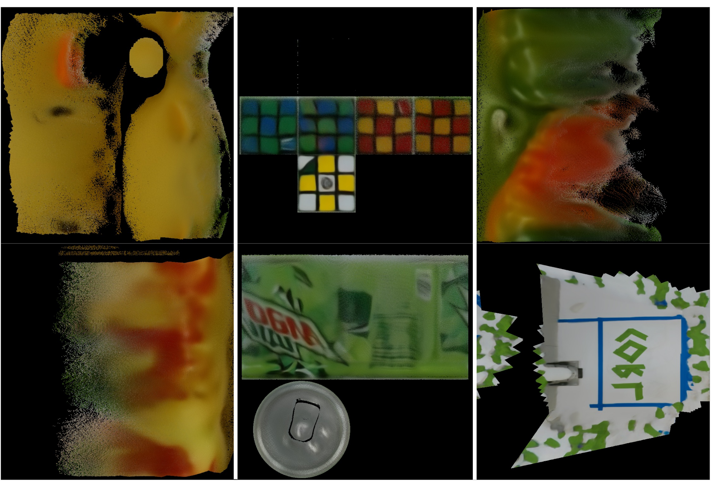
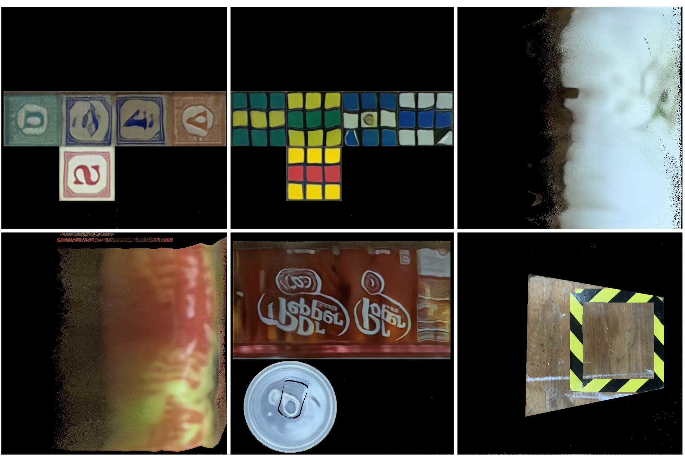
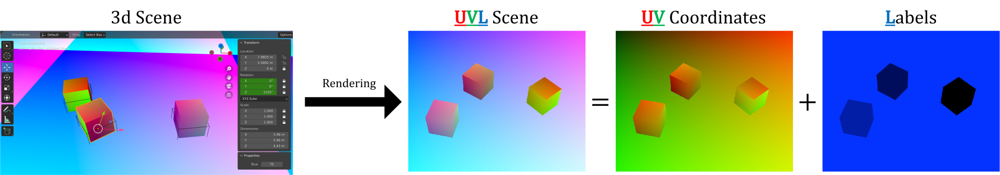
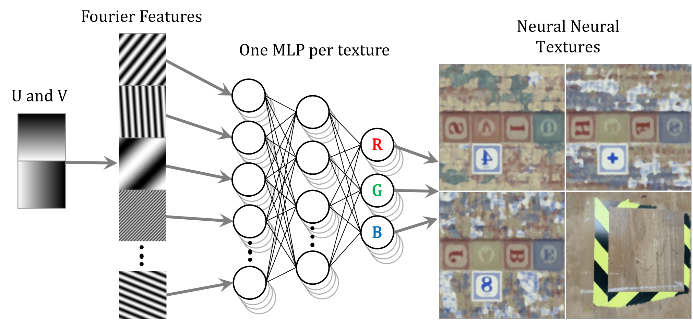
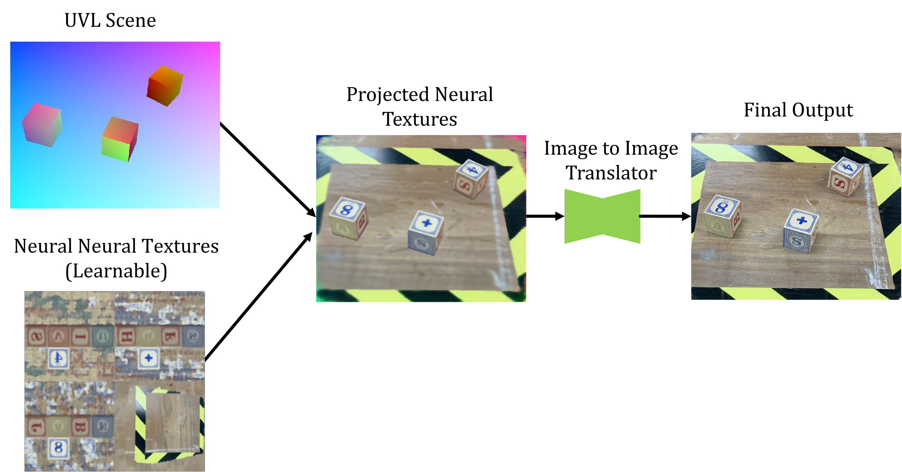

Paper #474 Come see us at the last poster session!
Abstract
We present TRITON (Texture Recovering Image Translation Network): an
unpaired image translation algorithm that achieves temporal consistency over indefinite timescales by generating neural textures on object surfaces.
At inference time, TRITON takes in a special
RGB
image representing a 3d scene (which we call a
UVL
image), and outputs a realistic
RGB
image that can then be used for downstream tasks, such as training a robot. The input
UVL
images are simple enough that even the most rudimentary 3d renderer can generate them.
Move your cursor along the video to move the the divider! On the left is the
UVL
input image, and on the right is the translated
RGB
output image. Note that all training photographs were taken from the same camera position; this video extrapolates new camera positions as well as new object positions.
This should be animated - if it's not working, please try a Chromium based browser.

||

Two sets of recovered textures, corresponding to the above two videos.
Here's an animation of a robot arm.
How it Works
The Training Data
To train TRITON, you need an unpaired set of photographs and a set of simulated scenes, rendered as
UVL
images.
We need a set of about 100 or so RGB real-life photographs

We also need a set of simulated
UVL images, which encode the
UV
coordinates of each object in a scene, as well as the object label L. Because these images can be obtained cheaply, we can use thousands of them.
Neural Neural Textures
What sets TRITON apart from other image translation algorithms is its use of neural neural textures.
Previous works called these learnable textures "neural textures", and were parametrized by a discrete grid of
differentiable texels. In contrast, we call our learnable textures as neural nerual textures, because our
textures themselves are represented as a neural network function, parameterized continuously over UV space.
Using this representation instead of using discrete texels allows TRITON to learn faster and yields better
results.

Each 3d object gets its own neural neural texture, which is represented continuously with an MLP.
The General Pipeline

This is a simplified version of the TRITON pipeline. It omits GAN losses as well as surface consistency losses. For more information, as well as a more detailed diagram, please read the paper!
Results
Comparison to other Image Translators
In the above video, we compare the outputs of TRITON to various other image translation
algorithms. TRITON provides higher quality, temporally consistent results. This is because TRITON is better at
making use of 3d geometry. or more comparison videos like this, please see our paper's appendix.
Robot policy trained by sim2real
TRITON enables a robot reacher task. In this sim2real experiment, we train a behavioral cloning
policy that takes single RGB image from a fixed camera in the simulator and deploy it directly to the real robot
without further fine-tuning. The action policy predicts the location of all the target objects simultaneously
and is trained fully by only 2000 photorealistic images generated from TRITON. Check out the demo video below.
Citation
If you would like to cite us, please use the below bibtex citation:
@inproceedings{Burgert2022,
author = {Burgert, Ryan and Shang, Jinghuan and Li, Xiang and Ryoo, Michael},
title = {Neural Neural Textures Make Sim2Real Consistent},
booktitle = {Proceedings of the 6th Conference on Robot Learning},
year = {2022},
url = {https://tritonpaper.github.io}
}